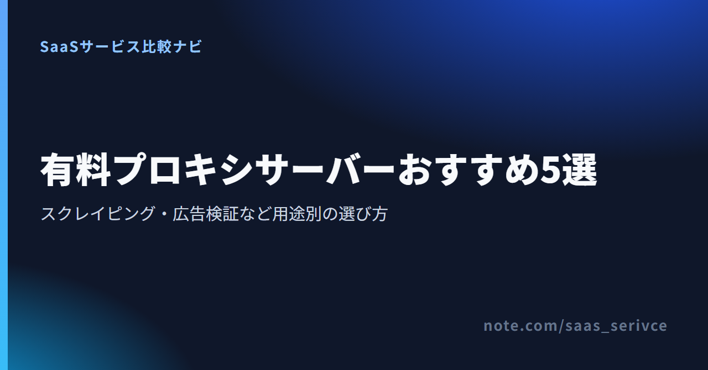
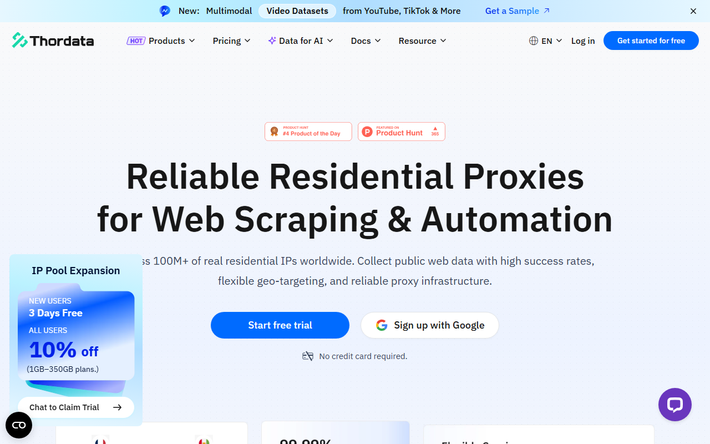
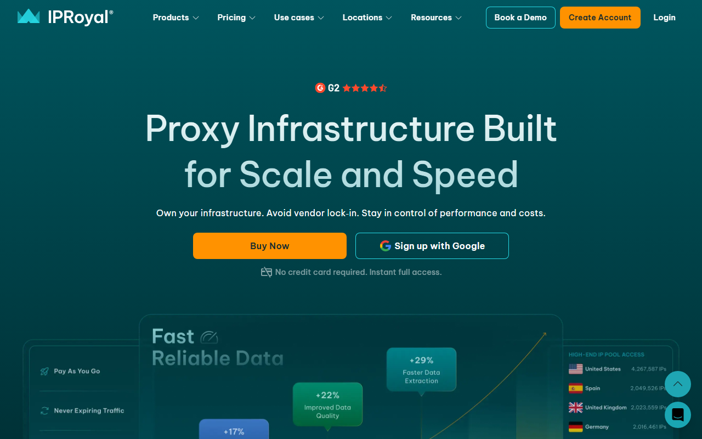
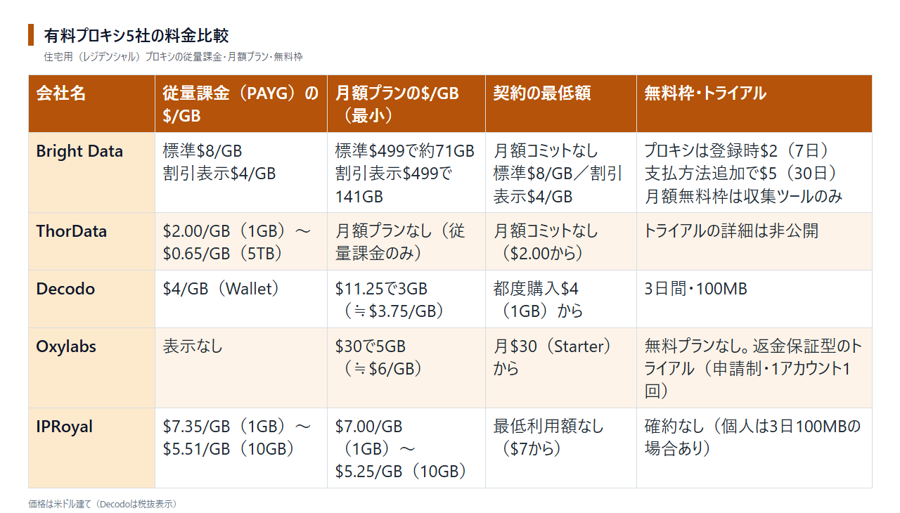

有料プロキシサーバーのおすすめ5選｜スクレイピング・広告検証など用途別の選び方
有料プロキシは、ECの価格調査や広告表示の確認などで、接続元のIPを切り替えるサービスです。比較項目は、5社の料金とプロキシの種類。日本語対応や返金条件の違いも取り上げます。
有料プロキシ5社の料金と無料枠を早見
- Bright Data：住宅用$8/GB／収集ツール月5,000件無料
- ThorData：住宅用$2/GB〜／SERP APIは7日無料
- Decodo：住宅用$4/GB／3日・100MB無料
- Oxylabs：住宅用月$30〜／申請制トライアル
- IPRoyal：住宅用$7.35/GB〜／常設無料枠なし
迷ったときの第一候補はBright Dataです。住宅用・データセンター・ISP型を従量課金で選べるのが特徴。収集ツールには月5,000件の無料枠もあります。
日本語の製品案内と、プロキシや収集ツールの現在の料金を見られます。
プロキシの種類（データセンター・住宅用・ISP・モバイル）の要点
4種類の違いは、単価とブロックされにくさです。IPを固定するか、入れ替えるかでも分かれます。
- データセンター型：クラウドなどのサーバーのIPを使います。5社すべてが扱う種類。4種類のなかでは最も安い一方、ボット対策が厳しいサイトでは遮断されることがあります
- 住宅用（レジデンシャル）型：一般家庭の回線に割り当てられたIPを使います。5社すべてが扱う種類です。通常の閲覧と区別されにくい一方、GB単価はデータセンター型の数倍から十数倍。Bright Dataでは、データセンター型$0.6/GBに対して住宅用$8/GBです
- ISP型：通信事業者名義のIPを固定して使います。5社ともIP単位で購入可能。会社によっては「Static ISP」「Static Residential」とも呼ばれます
- モバイル型：携帯電話回線のIPを使います。Oxylabs・Decodo・IPRoyalは料金を公開済み。Bright Dataの料金ページにはGB単価がなく、ThorDataではモバイル型の項目が見当たりません
スクレイピングでは、収集先のボット対策が厳しければ住宅用を選びます。対策が緩いサイトなら、データセンター型で費用を抑えられます。広告を日をまたいで同じIPから比べる場合は、ISP型が候補。多くの地域で一般利用者と同じ表示を確かめるなら住宅用、スマートフォン向け広告ならモバイル型が向いています。
有料プロキシサービスのおすすめ5選
最初に紹介するのは、住宅用を従量課金で始められるBright Data。日本語の案内もあります。ほかの4社は、料金と試用条件にそれぞれ特徴があります。
Bright Data

日本語表示の公式サイトには、「無料で開始」のボタンがあります。クレジットカード不要とも案内されています。
同社は、住宅用・データセンター・ISPのプロキシを提供しています。Web Unlocker・SERP API・Scraping Browserなど、データ収集用のツールも選べます。
月額契約のない住宅用の従量課金は$8/GBです。月額プランは$499（約71GB）・$999（約166GB）・$1,999（約399GB）の3段階。GB単価は約$7・約$6・約$5と、購入量が増えるほど下がります。データセンター型は従量課金$0.6/GBで、1TB以上なら$0.42/GBです。
ただし住宅用は登録企業だけが対象で、使う前に利用審査（KYC）があります（詳しくは後述）。
月額の無料プランはありません。無料枠は、3つの収集ツールで月5,000リクエストまで。クレジットカードの登録も不要です。Scraping Browserは月5,000クレジットで約1GB分に当たります。
プロキシと収集ツールの料金を見比べられます。
ThorData

英語表示のトップ画面には、無料トライアルとカード登録不要の案内があります。
ThorDataの住宅用プロキシは、月額契約なしで1GBから買えます。単価は購入量に応じて下がります。
- 1GB：$2.00/GB
- 10GB：$1.80/GB
- 150GB：$1.00/GB
- 1TB：$0.73/GB
- 5TB：$0.65/GB
固定IPで使うStatic ISP Proxiesとデータセンター型は、IP単位の料金です。通常価格は1IPあたり$1.50。どちらも通信量には課金されず、同じIPから長時間アクセスしても費用は変わりません。
返金条件は、2024年12月1日施行のポリシーに定められています。申請できるのは、初回購入から7日以内に1回だけです（使用量の条件は後述）。
SERP API（検索結果の取得）には7日間の無料トライアルがあり、500リクエストまで試せます。
GB単価と、SERP APIの無料トライアル条件を見られます。
Decodo（旧Smartproxy）

英語表示の画面には、無料で始めるボタンがあります。Googleアカウントで登録するボタンも用意されています。
Decodoは、以前Smartproxyという名前で提供されていたサービスです。2025年4月22日にブランド名を変更。会社・チーム・設備に変更はないと公式に説明しています。Smartproxy名義の古い記事に載る料金は、現在と異なる場合があります。
Decodoでは、住宅用を月額プランと都度購入のどちらでも買えます。月額プランは3GB（$3.75/GB、計$11.25）から100GB（$2.75/GB、計$275）までです。都度購入はWallet（残高）から1GB単位で$4/GB。表示価格はいずれも税抜きです。
無料トライアルは3日間・100MB。ただし、終了後は自動で有料プランに切り替わります。月額プランに付く14日間の返金保証も、トライアルには適用されません。試すだけなら、終了日を控えておいてください。
データセンター型は10GB・$6（$0.60/GB）から買えます。ボット対策の緩いサイトから大量にデータを集める際、費用を抑えられます。
3GBからの月額プランと、1GB単位の従量課金を見比べられます。
Oxylabs

英語表示の画面上部に、料金メニューと試用を案内するボタンがあります。
Oxylabsは、どの種類のプロキシも月額プランが基本です。住宅用は4段階。Starterは5GB・月$30（$6/GB）から始まります。Corporateは1TB・月$2,500（$2.50/GB）です。料金ページでは、単独の従量課金プランを案内していません。
ISP型は、サポートに申請すれば1回限りの無料トライアルを受けられます。料金は10IPで月$16（$1.60/IP）から500IPで月$600（$1.20/IP）まで段階があります。IPを増やすほど単価は下がります。
月額の住宅用・ISP型プランと、申請制トライアルの入口が分かります。
IPRoyal

英語表示のトップ画面には、料金メニューとアカウント作成ボタンがあります。
IPRoyalの住宅用プロキシには、月額の最低利用額も長期契約もありません。購入したGBに有効期限はなく、使い切るまで失効しない仕組み。作業量が月ごとに変わっても、余った通信量を翌月以降に回せます。
単価は購入量で決まります。月額プランは1GBの$7.00/GBから10GBの$5.25/GBまで。都度購入は1GBの$7.35/GBから10GBの$5.51/GBまでです。
ISP型は1プロキシ$1.80から、モバイル型は月$117からです。データセンター型は$1.39からで、60以上の地域を選べ、通信量の上限がありません。無料トライアルは常設ではなく、利用規約上は会社の判断で提供されるもの。ISP型やモバイル型は、低額の1日プランで試す方法が案内されています。
返金は原則として受け付けていません。最初は少量から。
購入量別の住宅用単価と、ISP・モバイル型の入口を見られます。
料金の比較｜GB課金・IP課金・最低契約額
IPを入れ替えながら広く集めるなら、住宅用のGB課金が合います。固定IPで長時間・大量に通信するなら、IP課金が向いています。
GB課金は、プロキシを通ったデータ量に応じて払う方式です。5社とも住宅用にはこの方式を採用。IP課金では、IPアドレス1個ごとに料金がかかります。ThorDataのStatic ISPとデータセンター型では、通信量に課金されないプランもあります。毎月の使用量が変わる場合、比較するのは従量課金と月額プランの総額です。
料金は5社とも米ドル建てです。1ドル=157円とすると、Bright Dataの$8/GBは約1,256円です（為替で変動する目安）。
必要なGB数は、1ページあたりのデータ量に取得するページ数を掛けて見積もります。画像を読み込まない設定にすれば、そのぶん通信量は減ります。

最初に払う額で比べると、ThorDataでは住宅用を1GB・$2.00で買えます。従量課金のないOxylabsは、最小でも月$30（5GB）かかります。
月に10GB使う場合、月額契約を結ばずに買うと次の金額になります。
- ThorData：$18（10GBで$1.80/GB）
- Decodo：$40（Walletで$4/GB）
- IPRoyal：約$55（10GBをまとめて買うと$5.51/GB）
- Bright Data：$80（$8/GB）
Decodoでは、約2.8GBが月額プランとの分かれ目です（月額3GBの$11.25÷Walletの$4）。一方、Bright Dataは約62GBが分かれ目（月額$499÷従量課金の$8）。使用量がこれより少なければ、従量課金のほうが安く済みます。
ISP型を10IPで比べると、Oxylabsは月$16です。一方、Bright Dataは共有で月$18、専有で月$35。共有では、ほかの利用者とIPを分け合います。自社だけで使いたい場合は、単価が上がっても専有を選びます。
GB課金とIP課金の価格差を、現在のプラン構成で見比べられます。
無料プロキシを業務で使ってはいけない理由
無料プロキシでは、誰がどんな条件で運営しているのか分からないまま、業務の通信を預けることになります。
- 業務データ：どのサイトにいつアクセスしたかは、中継するサーバーの運営者から見えます。毎日同じ競合サイトを見ていることや、公開前の自社サイトのドメインも知られるおそれがあります
- アカウント：無料プロキシのIPは大勢で使い回されています。そのため、収集先ですでに遮断されている場合があります。広告の管理画面にログインすると、追加確認やロックの対象になることもあります
- 契約と責任：取引先や社内から収集方法を聞かれても、根拠として示せる契約や利用規約がありません。止まったり遅くなったりしても、問い合わせ先も補償もありません
有料サービスには利用規約があり、返金や停止の条件が文書で決まっています。費用をかけずに試すなら、無料プロキシではなく各社の無料枠を使います。本番と同じネットワークを使えるためです。Web Unlocker（Bright Data）は月5,000リクエストまで無料。Decodoの住宅用トライアルは3日間・100MBまで使えます。
KYCと利用規約上の注意
登録企業だけがBright Dataの住宅用プロキシを使えます。利用審査（KYC）を通ってから使い始めます。
審査では、企業ドメインのメールアドレスで認証します。身分証明書も提出し、完了までは最大48時間。個人での利用は事実上できません。
審査では、会社情報に加えて収集先のサイトと目的も説明します。申請前に、対象とプロキシの種類を決めておきましょう。
プロキシ会社の利用規約に違反してアカウントが凍結されると、ThorDataやOxylabsでは返金の対象からも外れます。プロキシでIPを分散しても、収集先に対する責任は変わりません。確認項目は次のとおり。
- 収集先サイトの利用規約で、自動取得やスクレイピングが禁止されていないか
- robots.txtで収集を拒否しているページではないか
- 氏名や連絡先など個人情報を含むデータを集めるなら、個人情報保護法に沿って取得・管理できるか
- アクセスの間隔を空け、相手のサーバーに負荷をかけていないか
判断に迷う収集内容は、始める前に弁護士などの専門家に相談してください。
日本からの支払い・日本語対応
日本語の案内があるのはBright Dataだけです。JCBを対応ブランドとして挙げている会社はありません。
ThorDataを除く4社は、クレジットカードとPayPalに対応しています。カードの国際ブランドを明記しているのはDecodoとIPRoyalだけです。DecodoはVisa・Mastercard・American Expressに対応。IPRoyalでは、この3つにDiscoverが加わります。銀行振込は、Bright Dataが大口アカウント向けに案内。Oxylabsでは営業担当を通す契約が対象です。
- Bright Data：日本語サイトで製品と料金を読めます。Payoneerでも払えます
- ThorData：言語切替に日本語がなく、決済手段はアイコンで示されているだけです
- Decodo：請求書の発行元は、決済代行会社のPaddleです。VATの計算もPaddleが担います
- Oxylabs：請求書はダッシュボードの「My account」→「Invoices」から取得できます
- IPRoyal：暗号資産でも払えます。請求書は注文ごとにダッシュボードで受け取れます
日本語サポートを個別に明記した会社もありません。日本企業向けページでは、Bright Dataが多言語の24時間365日サポートをうたっています。ただし、標準窓口は営業日のメール対応。24時間対応はPremiumとEnterpriseに限られます。OxylabsとDecodoは24時間のチャットに対応。IPRoyalはメールとチャット、ThorDataはメールで問い合わせを受け付けます。
日本の適格請求書（インボイス）の登録番号を記載すると明示した会社も見当たりません。海外サービスの利用料にかかる消費税は、契約前に税理士へ確認してください。
解約・返金の条件
返金を申し出られる期間が最も長いのは、Decodoの14日間です。IPRoyalは原則として返金がありません。一方、Bright Dataの月額料金は返金対象外。
- Bright Data：期間の定めがない契約は、月末までに書面で通知すればいつでも解約できます。解約しても、使い切れなかった分の料金は戻りません
- ThorData：返金申請は初回購入から7日以内。使用量はパッケージの30%以下かつ2GB以下が条件です。対象は1顧客1回、初回注文の最初の料金だけです
- Decodo：月額プランは毎月自動で更新され、14日間の返金保証が付きます
- Oxylabs：解約手続きは「My account」→「Cancel subscription」から行います。プランは購入日を起点に自動で更新。返金は初回取引から暦日3日以内かつ利用量20%未満が条件で、処理には最大15営業日かかります
- IPRoyal：購入後24時間以内に、利用者側以外の原因で動かなかった場合は返金の対象になり得ます。自動更新分の条件は、課金から72時間以内かつ使用量100MB未満。暗号資産で払った分は返金されず、解約するまで自動で更新されます
返金の条件は、日数と使用量。最初は従量課金か最小のプランに抑えましょう。使用量が分かってから、大きなプランへ移れば無駄を減らせます。
返金対象外になる月額プランと、月額契約のない従量課金を分けて見られます。
まとめ
有料プロキシは、月に何GBまたは何IPを使うかを見積もると、候補を絞れます。使用量が月ごとに変わるなら、月額契約のない従量課金が向いています。毎月ほぼ同じなら月額プランが候補。固定IPで長く通信するなら、IP課金から検討します。見積もった量を、料金欄で示した分かれ目と比べてください。Decodoは約2.8GB、Bright Dataは約62GBが目安です。
従量課金を$8/GBから試す方法と、無料枠の対象になる収集ツールを見られます。